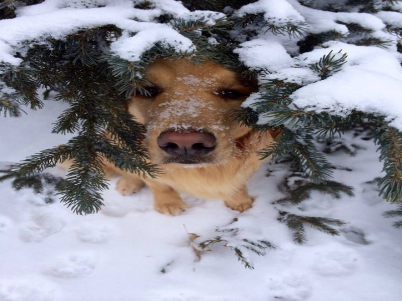
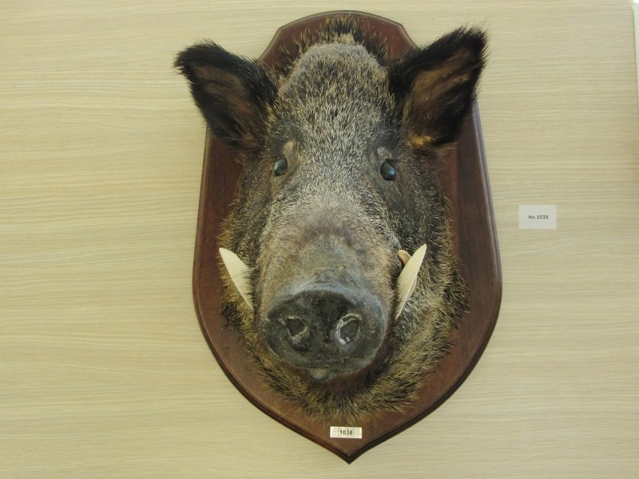
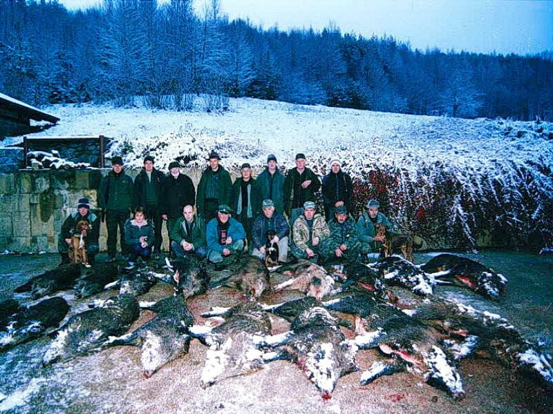
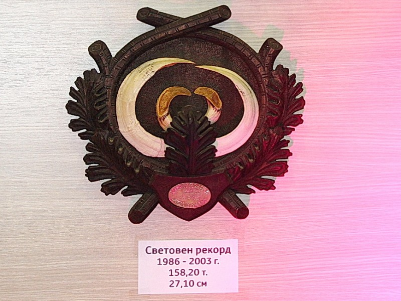
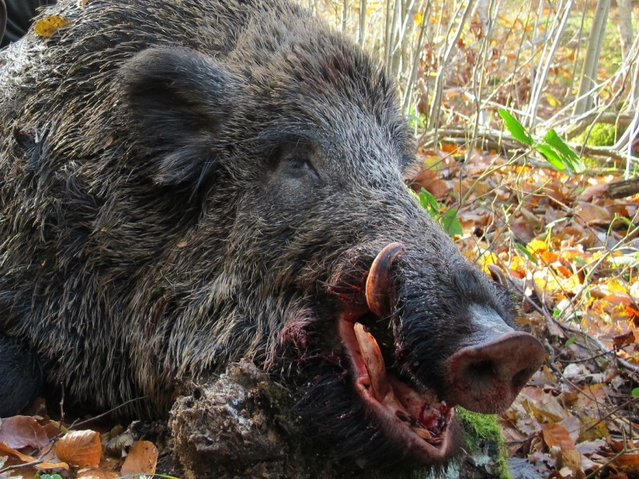
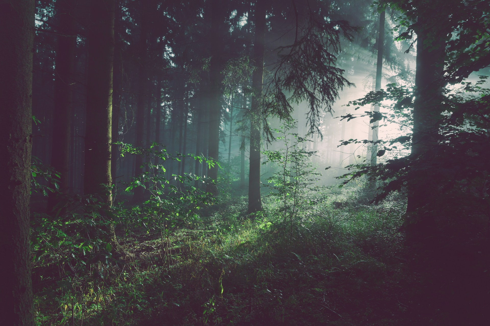
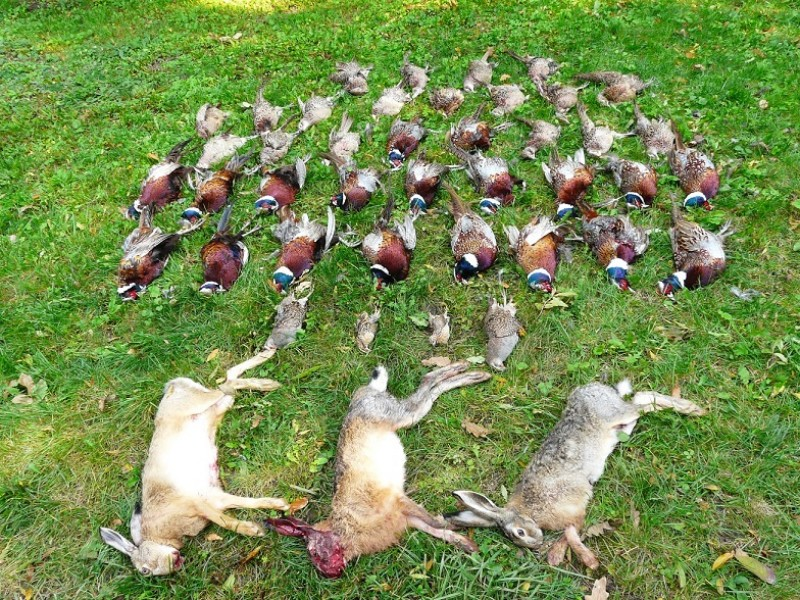
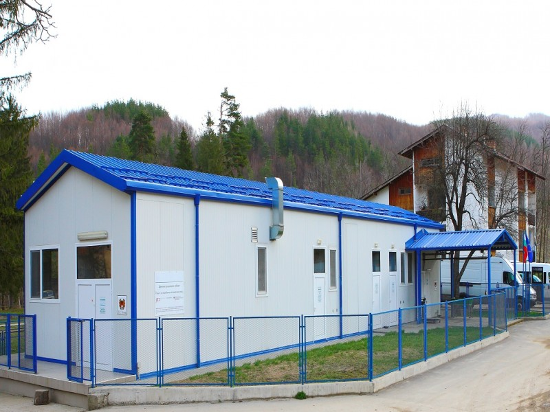

Професионални ловни програми и услуги


Ловни дестинации: Воден, Ири Хисар, Батаклията, Батин, Кокиче, Елен, Фазан...
Виж повече
Груповият лов на дива свиня е най-резултатен след средата на ноември, когато листата са опадали, в гората има добра видимост, а ловците, гоначите и кучетата са влезнали във форма. ...
Виж повече
Ловни дестинации: Воден, Ири Хисар, Батаклията, Батин, Кокиче, Елен, Фазан...
Виж повече
Посочената долу цена за 1 ловец на ден включва: храна, нощувка, ловен водач, автомобил 4х4. Отстреляният трофей се заплаща отделно съгласно утвърдения ценоразпис. ...
Виж повече
Друга възможност за интензивно ловуване е селекционният лов на благороден елен шилари, телета и стари кошути. Този лов продължава до края на декември, като оптимални са условията ...
Виж повече
В началото на октомври започва ловът на фазани. Популациите им, както и тези на зайците в ДЛС Каракуз и ДГС Сеслав са много добри. При групов лов от 6-7 ловци се достига отстрел от...
Виж повече
Дивечовото месо е много ценна храна. То е със специфичен тъмночервен цвят с приятен аромат и отлични гастрономични качества. Изключително богато е на белтъчини и бедно на мазнини, ...
Виж повечеЛюбителите на риболова няма да останат разочаровани, ако решат да изберат някоя от нашите бази, за да се насладят на своя любим спорт. Гостите на ловните домове Елен и Фазан имат в...
Виж повече